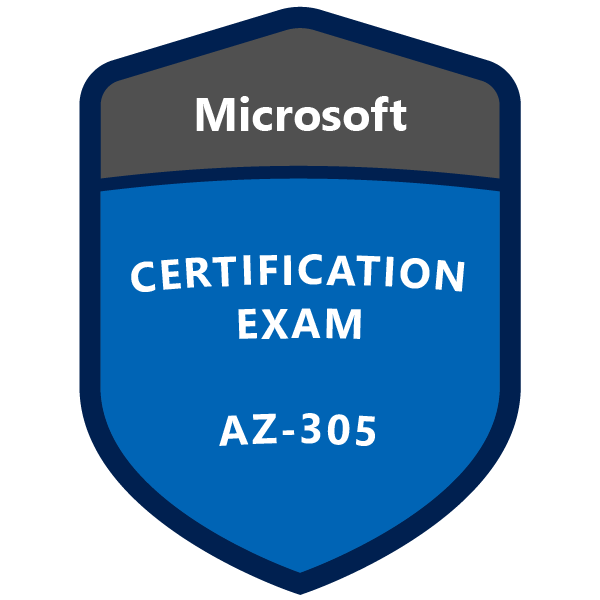

Transitioning careers can be challenging, especially when moving from a specialized field like SQL Server database administration to the expansive realm of cloud computing. This page is dedicated to all SQL Server DBAs looking to advance their careers by embracing Azure cloud technologies. Here, you'll find a curated list of Azure certifications that will help you navigate this transition and empower your journey into cloud computing.
Fundamentals
-
 AZ-900: Microsoft Azure Fundamentals - Learn more
AZ-900: Microsoft Azure Fundamentals - Learn more
Introduces cloud services and the various Azure offerings. It's ideal for individuals beginning their cloud services journey.Introduces cloud services and the various Azure offerings. It's ideal for individuals beginning their cloud services journey.
-
 DP-900: Microsoft Azure Data Fundamentals - Learn more
DP-900: Microsoft Azure Data Fundamentals - Learn more
Covers basic database concepts in a cloud environment, providing foundational knowledge necessary for other data-related Azure certifications.
-
 AI-900: Microsoft Azure AI Fundamentals - Learn more
AI-900: Microsoft Azure AI Fundamentals - Learn more
Introduces concepts related to Artificial Intelligence (AI) and the services in Microsoft Azure that can be used to create AI solutions.
-
 SC-900: Microsoft Security, Compliance, and Identity Fundamentals - Learn more
SC-900: Microsoft Security, Compliance, and Identity Fundamentals - Learn more
Provides foundational knowledge on security, compliance, and identity across cloud-based and related Microsoft services.
Azure Data Engineer
-
 DP-203: Data Engineering on Microsoft Azure - Learn more
DP-203: Data Engineering on Microsoft Azure - Learn more
Focuses on implementing and managing data solutions in Azure, optimizing data storage and data processing infrastructure.
Data Analyst
-
 PL-300: Microsoft Power BI Data Analyst - Learn more
PL-300: Microsoft Power BI Data Analyst - Learn more
Designed for professionals who use Power BI to analyze and visualize data, helping organizations maximize the value of their data assets.
Azure Database Administrator
-
 DP-300: Administering Relational Databases on Microsoft Azure - Learn more
DP-300: Administering Relational Databases on Microsoft Azure - Learn more
Targets SQL Server DBAs transitioning to Azure, focusing on managing, monitoring, and maintaining SQL databases in the cloud.
Azure Solution Architect
-

AZ-305: Designing Microsoft Azure Infrastructure Solutions - Learn more
Geared towards professionals who advise stakeholders and translate business requirements into secure, scalable, and reliable solutions.
Azure DevOps Engineer
-
 AZ-400: Designing and Implementing Microsoft DevOps Solutions - Learn more
AZ-400: Designing and Implementing Microsoft DevOps Solutions - Learn more
Targets professionals looking to integrate DevOps methodologies with Azure technologies and services.